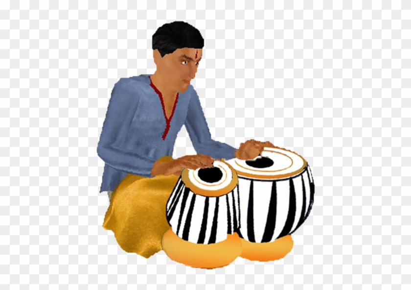

Hello Everyone, My Name is Debmalya Chakraborty
and I am a student of CSE
at RCCIIT and also a
MY WORK EXPERIENCES
Classical Singer (2010-Present)
Classical music, with its rich history and timeless compositions,
has always held a special place in my heart.
From the elegant symphonies of Mozart to the profound depth of Beethoven's sonatas, this genre captivates me like no other.
My passion for classical music is not merely a fleeting interest;
it is a deep-rooted love affair that has shaped my life and touched my soul in countless ways.

Tabla Player (2012-Present)
The rhythmic beats reverberate through my veins, awakening a deep sense of joy and connection.
The tabla, an enchanting instrument from the rich heritage of Indian classical music,
has become more than just an instrument to me—it is the vessel through which my passion flows and my soul finds expression.
Guitar Player (2022-Present)
Ever since I first laid my hands on a guitar, I knew I had discovered my true passion.
The feeling of the smooth wooden neck beneath my fingertips, the vibrant vibrations that resonate through the body, and the melodic sound that emerges with every strum—it all captivated me from the very beginning.
The guitar became more than just an instrument; it became an extension of myself, a medium through which I could express my deepest emotions and connect with others on a profound level.
Pianoist (2020-Present)
From the first moment I laid my hands on the smooth keys of a piano,
I knew that I had discovered a profound and enduring passion.
The instrument's melodic allure, its ability to convey emotions,
and the way it allows me to express my innermost thoughts and feelings captivate me like nothing else.
The piano has become more than a mere instrument to me—it is a conduit for my soul.
Coder (2020-Present)
Coding is not merely a skill or a profession for me;
it is a deep-rooted passion that ignites my creativity and fuels my drive for continuous learning.
From the moment I started exploring the world of programming,
I was captivated by its limitless potential and the ability to bring ideas to life through lines of code.
Content Creator (2021-Present)
Music has always held a special place in my heart.
From an early age, I was captivated by its power to evoke emotions,
tell stories, and create connections between people.
As I grew older, I realized that my passion for music extended beyond just listening and appreciating it.
I discovered a burning desire to share my love for music with others and to contribute to the ever-growing music community.
This led me to delve into the exciting world of content creation centered around music.